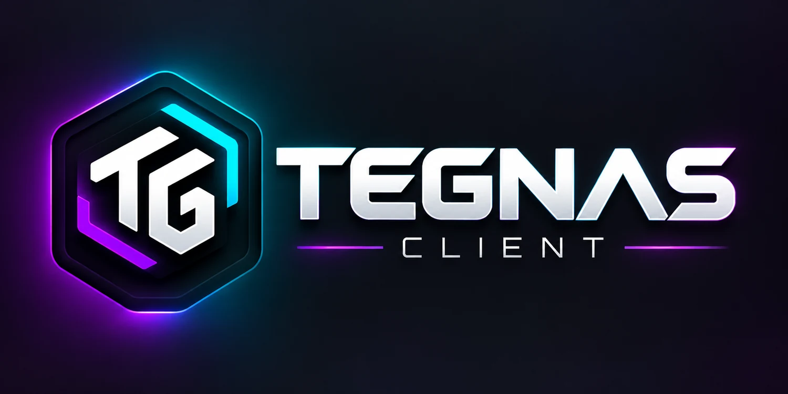

◈
Profile & Instanzen
Mehrere Minecraft-Setups übersichtlich verwalten und mit wenigen Klicks starten.
Profile, Mods, Ressourcenpakete, Shader und Skins in einer klaren Oberfläche. Tegnas Launcher bringt dein Minecraft-Setup zusammen und hält sich automatisch aktuell.
Weniger Ordnerchaos, weniger manuelle Updates und ein direkter Weg vom Profil ins Spiel.
Mehrere Minecraft-Setups übersichtlich verwalten und mit wenigen Klicks starten.
Installierte Mods verwalten und verfügbare Aktualisierungen direkt im Launcher erkennen.
Neue Launcher-Versionen werden erkannt und können direkt aus der Anwendung installiert werden.
Ressourcenpakete und Shader zentral verwalten, ohne ständig zwischen Ordnern zu wechseln.
Dein Minecraft-Erscheinungsbild direkt im Tegnas-Ökosystem verwalten.
Anmeldung über den offiziellen Microsoft-OAuth-Flow. Passwörter werden nicht vom Launcher erfasst.

Der Tegnas Launcher ist die Zentrale für deine Profile und Inhalte. Der Tegnas Client ergänzt dein Minecraft-Erlebnis mit den Funktionen, die wir gezielt für unser Setup entwickeln.
Die neueste veröffentlichte Version für Windows.